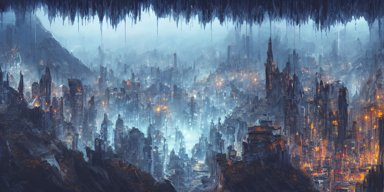
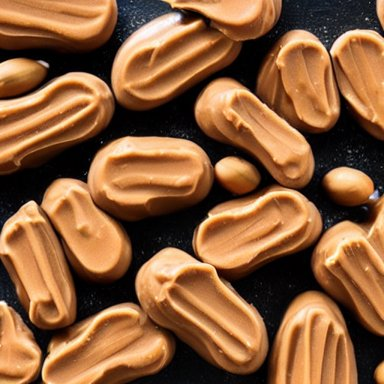
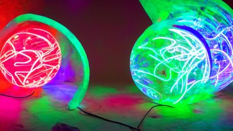
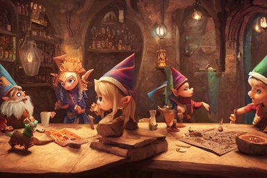
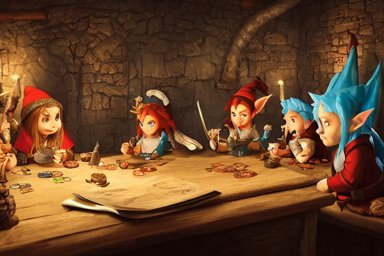
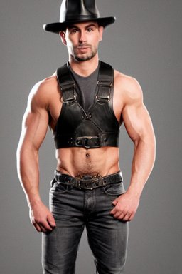

Held-out observed pairs. Supportive/counterexamples are extremes in the frozen direction, one per distinct prompt; random audit uses a seeded hash ordering. Examples are illustrative, not typicality or causal evidence. The CSV is a blank human annotation template.
emerald-green (preferred direction frozen on discovery) supportive astronaut drifting afloat in space, in the darkness away from anyone else, alone, digital render, detailed illustration, black background dotted with stars, concept art, realistic, 8 k
preferred: 0.2190 rejected: 0.1803 Preferred − rejected: +0.0387; event imagereward:test:007019-0095. Unverified.
supportive Boris Johnson and Eminen on a stage having an epic rap battle together
preferred: 0.2176 rejected: 0.1806 Preferred − rejected: +0.0370; event imagereward:test:007713-0046. Unverified.
counterexample mother theresa eating a terrapin
preferred: 0.1836 rejected: 0.2463 Preferred − rejected: -0.0627; event imagereward:test:010817-0088. Unverified.
counterexample a bright fantasy city built between cliffs, sleek glass buildings, elegant bridges between stalactites, illustration, raining, dark and moody lighting, at night, digital art, oil painting, cold blue tones, fantasy, 8 k, trending on artstation, detailed

preferred: 0.1768 rejected: 0.2363 Preferred − rejected: -0.0596; event imagereward:test:010921-0064. Unverified.
random_audit a bright fantasy city built between cliffs, sleek glass buildings, elegant bridges between stalactites, illustration, raining, dark and moody lighting, at night, digital art, oil painting, cold blue tones, fantasy, 8 k, trending on artstation, detailed
preferred: 0.1768 rejected: 0.2363 Preferred − rejected: -0.0596; event imagereward:test:010921-0064. Unverified.
random_audit funny peanut butter
preferred: 0.1967 rejected: 0.2027 Preferred − rejected: -0.0060; event imagereward:test:010856-0009. Unverified.
red-velvet (preferred direction frozen on discovery) supportive funny peanut butter
preferred: 0.2474 
rejected: 0.1868 Preferred − rejected: +0.0606; event imagereward:test:010856-0009. Unverified.
supportive a bright fantasy city built between cliffs, sleek glass buildings, elegant bridges between stalactites, illustration, raining, dark and moody lighting, at night, digital art, oil painting, cold blue tones, fantasy, 8 k, trending on artstation, detailed
preferred: 0.2225 rejected: 0.1762 Preferred − rejected: +0.0463; event imagereward:test:010921-0064. Unverified.
counterexample a bright fantasy city built between cliffs, sleek glass buildings, elegant bridges between stalactites, illustration, raining, dark and moody lighting, at night, digital art, oil painting, cold blue tones, fantasy, 8 k, trending on artstation, detailed
preferred: 0.1368 rejected: 0.2217 Preferred − rejected: -0.0849; event imagereward:test:010921-0064. Unverified.
counterexample astronaut drifting afloat in space, in the darkness away from anyone else, alone, digital render, detailed illustration, black background dotted with stars, concept art, realistic, 8 k
preferred: 0.1545 rejected: 0.2243 Preferred − rejected: -0.0698; event imagereward:test:007019-0095. Unverified.
random_audit astronaut drifting afloat in space, in the darkness away from anyone else, alone, digital render, detailed illustration, black background dotted with stars, concept art, realistic, 8 k
preferred: 0.1545 rejected: 0.2243 Preferred − rejected: -0.0698; event imagereward:test:007019-0095. Unverified.
random_audit mother theresa eating a terrapin
preferred: 0.1718 rejected: 0.1879 Preferred − rejected: -0.0161; event imagereward:test:010817-0088. Unverified.
fierce-looking (preferred direction frozen on discovery) supportive funny peanut butter
preferred: 0.2245 rejected: 0.2081 Preferred − rejected: +0.0164; event imagereward:test:010856-0009. Unverified.
supportive film still of the geisha robot from ghost in the shell, cinematic lighting, 3 5 mm, high resolution
preferred: 0.2828 rejected: 0.2675 Preferred − rejected: +0.0154; event imagereward:test:008289-0059. Unverified.
counterexample a bright fantasy city built between cliffs, sleek glass buildings, elegant bridges between stalactites, illustration, raining, dark and moody lighting, at night, digital art, oil painting, cold blue tones, fantasy, 8 k, trending on artstation, detailed
preferred: 0.2270 rejected: 0.2426 Preferred − rejected: -0.0156; event imagereward:test:010921-0064. Unverified.
counterexample cinematic movie scene, beautiful Product shot film still of a Syd Mead futuristic modern sleek automobile speeding down a wet street at night in cyperpunk city, motion, hard surface modeling, volumetric soft lighting, style of Stanley Kubrick cinematography, 8k H 768
preferred: 0.2267 rejected: 0.2421
Preferred − rejected: -0.0155; event imagereward:test:011041-0080. Unverified.
random_audit Boris Johnson and Eminen on a stage having an epic rap battle together
preferred: 0.2541 rejected: 0.2675 Preferred − rejected: -0.0135; event imagereward:test:007713-0046. Unverified.
random_audit Horrifying creature, haunted, horror
preferred: 0.2774 rejected: 0.2743 Preferred − rejected: +0.0031; event imagereward:test:009006-0102. Unverified.
hot-pink (preferred direction frozen on discovery) supportive the pope in saving private james ryan
preferred: 0.2931 rejected: 0.1846 Preferred − rejected: +0.1085; event imagereward:test:010918-0030. Unverified.
supportive realistic photography of a man 3 5 years old with a bit of bear, short hair, few wrinkles around eyes, sexy, cinematographic, cinematic light, close up view, intense, colorize, 8 0 mm lens
preferred: 0.2481 rejected: 0.1489 Preferred − rejected: +0.0991; event imagereward:test:001260-0073. Unverified.
counterexample astronaut drifting afloat in space, in the darkness away from anyone else, alone, digital render, detailed illustration, black background dotted with stars, concept art, realistic, 8 k
preferred: 0.1444 rejected: 0.2754 Preferred − rejected: -0.1310; event imagereward:test:007019-0095. Unverified.
counterexample a bright fantasy city built between cliffs, sleek glass buildings, elegant bridges between stalactites, illustration, raining, dark and moody lighting, at night, digital art, oil painting, cold blue tones, fantasy, 8 k, trending on artstation, detailed
preferred: 0.1530 rejected: 0.2269 Preferred − rejected: -0.0739; event imagereward:test:010921-0064. Unverified.
random_audit Horrifying creature, haunted, horror
preferred: 0.1299 rejected: 0.1419 Preferred − rejected: -0.0120; event imagereward:test:009006-0102. Unverified.
random_audit bioluminescent crystal ball abstract sculpture, neon, fluorescent, magenta hyper detailed, red & purple beauteous biomechanical organic lightpainting, 8 k scenery, perfect lighting balance,
preferred: 0.3040 
rejected: 0.3008 Preferred − rejected: +0.0033; event imagereward:test:008275-0162. Unverified.
big-eared (preferred direction frozen on discovery) supportive funny peanut butter
preferred: 0.2975 rejected: 0.2089 Preferred − rejected: +0.0886; event imagereward:test:010856-0009. Unverified.
supportive realistic photography of a man 3 5 years old with a bit of bear, short hair, few wrinkles around eyes, sexy, cinematographic, cinematic light, close up view, intense, colorize, 8 0 mm lens
preferred: 0.2763 rejected: 0.2377 Preferred − rejected: +0.0386; event imagereward:test:001260-0073. Unverified.
counterexample cinematic movie scene, beautiful Product shot film still of a Syd Mead futuristic modern sleek automobile speeding down a wet street at night in cyperpunk city, motion, hard surface modeling, volumetric soft lighting, style of Stanley Kubrick cinematography, 8k H 768
preferred: 0.1889 rejected: 0.2268
Preferred − rejected: -0.0380; event imagereward:test:011041-0080. Unverified.
counterexample a bright fantasy city built between cliffs, sleek glass buildings, elegant bridges between stalactites, illustration, raining, dark and moody lighting, at night, digital art, oil painting, cold blue tones, fantasy, 8 k, trending on artstation, detailed
preferred: 0.1962 rejected: 0.2278 Preferred − rejected: -0.0316; event imagereward:test:010921-0064. Unverified.
random_audit funny peanut butter
preferred: 0.2975 rejected: 0.2238 Preferred − rejected: +0.0737; event imagereward:test:010856-0009. Unverified.
random_audit cinematic movie scene, beautiful Product shot film still of a Syd Mead futuristic modern sleek automobile speeding down a wet street at night in cyperpunk city, motion, hard surface modeling, volumetric soft lighting, style of Stanley Kubrick cinematography, 8k H 768
preferred: 0.1889 rejected: 0.2268
Preferred − rejected: -0.0380; event imagereward:test:011041-0080. Unverified.
neon-green (preferred direction frozen on discovery) supportive realistic photography of a man 3 5 years old with a bit of bear, short hair, few wrinkles around eyes, sexy, cinematographic, cinematic light, close up view, intense, colorize, 8 0 mm lens
preferred: 0.2264 rejected: 0.1487 Preferred − rejected: +0.0778; event imagereward:test:001260-0073. Unverified.
supportive a bright fantasy city built between cliffs, sleek glass buildings, elegant bridges between stalactites, illustration, raining, dark and moody lighting, at night, digital art, oil painting, cold blue tones, fantasy, 8 k, trending on artstation, detailed
preferred: 0.2836 rejected: 0.2122 Preferred − rejected: +0.0714; event imagereward:test:010921-0064. Unverified.
counterexample mother theresa eating a terrapin
preferred: 0.1543 rejected: 0.2964 Preferred − rejected: -0.1420; event imagereward:test:010817-0088. Unverified.
counterexample a bright fantasy city built between cliffs, sleek glass buildings, elegant bridges between stalactites, illustration, raining, dark and moody lighting, at night, digital art, oil painting, cold blue tones, fantasy, 8 k, trending on artstation, detailed
preferred: 0.1675 rejected: 0.2472 Preferred − rejected: -0.0797; event imagereward:test:010921-0064. Unverified.
random_audit mother theresa eating a terrapin
preferred: 0.1543 rejected: 0.2964 Preferred − rejected: -0.1420; event imagereward:test:010817-0088. Unverified.
random_audit cute little dragon, gnome, elf, mage playing dnd at night in a medieval bar, fantasy, concept art, highly detailed, octane, unreal engine, anime, by laurel d austin, ghibly, disney, pixar, dreamworks

preferred: 0.2500 
rejected: 0.2766 Preferred − rejected: -0.0266; event imagereward:test:007753-0023. Unverified.
building (preferred direction frozen on discovery) supportive funny peanut butter
preferred: 0.2314 rejected: 0.1799 Preferred − rejected: +0.0515; event imagereward:test:010856-0009. Unverified.
supportive Boris Johnson and Eminen on a stage having an epic rap battle together
preferred: 0.2780 rejected: 0.2407 Preferred − rejected: +0.0373; event imagereward:test:007713-0046. Unverified.
counterexample the pope in saving private james ryan
preferred: 0.2838 rejected: 0.3340 Preferred − rejected: -0.0502; event imagereward:test:010918-0030. Unverified.
counterexample realistic photography of a man 3 5 years old with a bit of bear, short hair, few wrinkles around eyes, sexy, cinematographic, cinematic light, close up view, intense, colorize, 8 0 mm lens
preferred: 0.2167 rejected: 0.2538 Preferred − rejected: -0.0371; event imagereward:test:001260-0073. Unverified.
random_audit bioluminescent crystal ball abstract sculpture, neon, fluorescent, magenta hyper detailed, red & purple beauteous biomechanical organic lightpainting, 8 k scenery, perfect lighting balance,
preferred: 0.1824 rejected: 0.2065 Preferred − rejected: -0.0241; event imagereward:test:008275-0162. Unverified.
random_audit Drama King, photorealistic portrait, 8K, Cinematic lights
preferred: 0.2102 rejected: 0.1930 Preferred − rejected: +0.0172; event imagereward:test:007108-0023. Unverified.
red-rock (preferred direction frozen on discovery) supportive Drama King, photorealistic portrait, 8K, Cinematic lights
preferred: 0.1912 rejected: 0.1193 Preferred − rejected: +0.0719; event imagereward:test:007108-0023. Unverified.
supportive funny peanut butter
preferred: 0.2427 rejected: 0.1829 Preferred − rejected: +0.0599; event imagereward:test:010856-0009. Unverified.
counterexample bioluminescent crystal ball abstract sculpture, neon, fluorescent, magenta hyper detailed, red & purple beauteous biomechanical organic lightpainting, 8 k scenery, perfect lighting balance,
preferred: 0.1443 rejected: 0.2857 Preferred − rejected: -0.1414; event imagereward:test:008275-0162. Unverified.
counterexample astronaut drifting afloat in space, in the darkness away from anyone else, alone, digital render, detailed illustration, black background dotted with stars, concept art, realistic, 8 k
preferred: 0.1561 rejected: 0.2445 Preferred − rejected: -0.0884; event imagereward:test:007019-0095. Unverified.
random_audit a group of artists creating a masterpiece, glorious, in the style of artgerm and charlie bowater and atey ghailan and mike mignola, epic lighting, vibrant colors and hard shadows and strong rim light, very coherent, comic cover art, plain background, trending on artstation
preferred: 0.2383 rejected: 0.2819 Preferred − rejected: -0.0436; event imagereward:test:008615-0007. Unverified.
random_audit funny peanut butter
preferred: 0.2427 rejected: 0.2076 Preferred − rejected: +0.0351; event imagereward:test:010856-0009. Unverified.
red-and-yellow (preferred direction frozen on discovery) supportive funny peanut butter
preferred: 0.2913 rejected: 0.1678 Preferred − rejected: +0.1235; event imagereward:test:010856-0009. Unverified.
supportive a bright fantasy city built between cliffs, sleek glass buildings, elegant bridges between stalactites, illustration, raining, dark and moody lighting, at night, digital art, oil painting, cold blue tones, fantasy, 8 k, trending on artstation, detailed
preferred: 0.2778 rejected: 0.1910 Preferred − rejected: +0.0868; event imagereward:test:010921-0064. Unverified.
counterexample mother theresa eating a terrapin
preferred: 0.1636 rejected: 0.2744 Preferred − rejected: -0.1108; event imagereward:test:010817-0088. Unverified.
counterexample astronaut drifting afloat in space, in the darkness away from anyone else, alone, digital render, detailed illustration, black background dotted with stars, concept art, realistic, 8 k
preferred: 0.1779 rejected: 0.2880 Preferred − rejected: -0.1101; event imagereward:test:007019-0095. Unverified.
random_audit cinematic movie scene, beautiful Product shot film still of a Syd Mead futuristic modern sleek automobile speeding down a wet street at night in cyperpunk city, motion, hard surface modeling, volumetric soft lighting, style of Stanley Kubrick cinematography, 8k H 768
preferred: 0.3023 rejected: 0.2702 Preferred − rejected: +0.0321; event imagereward:test:011041-0080. Unverified.
random_audit realistic photography of a man 3 5 years old with a bit of bear, short hair, few wrinkles around eyes, sexy, cinematographic, cinematic light, close up view, intense, colorize, 8 0 mm lens
preferred: 0.1665 rejected: 0.1758 Preferred − rejected: -0.0093; event imagereward:test:001260-0073. Unverified.
magenta (preferred direction frozen on discovery) supportive the pope in saving private james ryan
preferred: 0.2039 rejected: 0.1422 Preferred − rejected: +0.0617; event imagereward:test:010918-0030. Unverified.
supportive funny peanut butter
preferred: 0.1903 rejected: 0.1465 Preferred − rejected: +0.0437; event imagereward:test:010856-0009. Unverified.
counterexample astronaut drifting afloat in space, in the darkness away from anyone else, alone, digital render, detailed illustration, black background dotted with stars, concept art, realistic, 8 k
preferred: 0.1336 rejected: 0.1883 Preferred − rejected: -0.0547; event imagereward:test:007019-0095. Unverified.
counterexample a bright fantasy city built between cliffs, sleek glass buildings, elegant bridges between stalactites, illustration, raining, dark and moody lighting, at night, digital art, oil painting, cold blue tones, fantasy, 8 k, trending on artstation, detailed
preferred: 0.0977 rejected: 0.1470 Preferred − rejected: -0.0493; event imagereward:test:010921-0064. Unverified.
random_audit cute little dragon, gnome, elf, mage playing dnd at night in a medieval bar, fantasy, concept art, highly detailed, octane, unreal engine, anime, by laurel d austin, ghibly, disney, pixar, dreamworks
preferred: 0.1560 rejected: 0.1299
Preferred − rejected: +0.0261; event imagereward:test:007753-0023. Unverified.
random_audit a bright fantasy city built between cliffs, sleek glass buildings, elegant bridges between stalactites, illustration, raining, dark and moody lighting, at night, digital art, oil painting, cold blue tones, fantasy, 8 k, trending on artstation, detailed
preferred: 0.0977 rejected: 0.1123 Preferred − rejected: -0.0145; event imagereward:test:010921-0064. Unverified.
drainboard (rejected direction frozen on discovery) supportive Boris Johnson and Eminen on a stage having an epic rap battle together
preferred: 0.1972 rejected: 0.2585 Preferred − rejected: -0.0613; event imagereward:test:007713-0046. Unverified.
supportive bioluminescent crystal ball abstract sculpture, neon, fluorescent, magenta hyper detailed, red & purple beauteous biomechanical organic lightpainting, 8 k scenery, perfect lighting balance,
preferred: 0.1560 rejected: 0.1935 Preferred − rejected: -0.0375; event imagereward:test:008275-0162. Unverified.
counterexample a bright fantasy city built between cliffs, sleek glass buildings, elegant bridges between stalactites, illustration, raining, dark and moody lighting, at night, digital art, oil painting, cold blue tones, fantasy, 8 k, trending on artstation, detailed
preferred: 0.2137 rejected: 0.1704 Preferred − rejected: +0.0432; event imagereward:test:010921-0064. Unverified.
counterexample cute little dragon, gnome, elf, mage playing dnd at night in a medieval bar, fantasy, concept art, highly detailed, octane, unreal engine, anime, by laurel d austin, ghibly, disney, pixar, dreamworks
preferred: 0.2356 rejected: 0.2032
Preferred − rejected: +0.0325; event imagereward:test:007753-0023. Unverified.
random_audit realistic photography of a man 3 5 years old with a bit of bear, short hair, few wrinkles around eyes, sexy, cinematographic, cinematic light, close up view, intense, colorize, 8 0 mm lens
preferred: 0.1717 rejected: 0.1992 Preferred − rejected: -0.0275; event imagereward:test:001260-0073. Unverified.
random_audit a bright fantasy city built between cliffs, sleek glass buildings, elegant bridges between stalactites, illustration, raining, dark and moody lighting, at night, digital art, oil painting, cold blue tones, fantasy, 8 k, trending on artstation, detailed
preferred: 0.2137 rejected: 0.1892 Preferred − rejected: +0.0245; event imagereward:test:010921-0064. Unverified.
bucket (rejected direction frozen on discovery) supportive the pope in saving private james ryan
preferred: 0.1708 rejected: 0.2374 Preferred − rejected: -0.0665; event imagereward:test:010918-0030. Unverified.
supportive film still of the geisha robot from ghost in the shell, cinematic lighting, 3 5 mm, high resolution
preferred: 0.1635 rejected: 0.2281 Preferred − rejected: -0.0646; event imagereward:test:008289-0059. Unverified.
counterexample a bright fantasy city built between cliffs, sleek glass buildings, elegant bridges between stalactites, illustration, raining, dark and moody lighting, at night, digital art, oil painting, cold blue tones, fantasy, 8 k, trending on artstation, detailed
preferred: 0.2417 rejected: 0.1741 Preferred − rejected: +0.0676; event imagereward:test:010921-0064. Unverified.
counterexample mother theresa eating a terrapin
preferred: 0.2372 rejected: 0.2017 Preferred − rejected: +0.0355; event imagereward:test:010817-0088. Unverified.
random_audit realistic photography of a man 3 5 years old with a bit of bear, short hair, few wrinkles around eyes, sexy, cinematographic, cinematic light, close up view, intense, colorize, 8 0 mm lens
preferred: 0.2152 rejected: 0.2097 Preferred − rejected: +0.0055; event imagereward:test:001260-0073. Unverified.
random_audit cute little dragon, gnome, elf, mage playing dnd at night in a medieval bar, fantasy, concept art, highly detailed, octane, unreal engine, anime, by laurel d austin, ghibly, disney, pixar, dreamworks
preferred: 0.2692 rejected: 0.2777
Preferred − rejected: -0.0085; event imagereward:test:007753-0023. Unverified.
bowl-shaped (rejected direction frozen on discovery) supportive funny peanut butter
preferred: 0.2653 rejected: 0.3140 Preferred − rejected: -0.0486; event imagereward:test:010856-0009. Unverified.
supportive realistic photography of a man 3 5 years old with a bit of bear, short hair, few wrinkles around eyes, sexy, cinematographic, cinematic light, close up view, intense, colorize, 8 0 mm lens
preferred: 0.1850 rejected: 0.2268 Preferred − rejected: -0.0418; event imagereward:test:001260-0073. Unverified.
counterexample mother theresa eating a terrapin
preferred: 0.2524 rejected: 0.1932 Preferred − rejected: +0.0592; event imagereward:test:010817-0088. Unverified.
counterexample Boris Johnson and Eminen on a stage having an epic rap battle together
preferred: 0.2374 rejected: 0.1891 Preferred − rejected: +0.0483; event imagereward:test:007713-0046. Unverified.
random_audit astronaut drifting afloat in space, in the darkness away from anyone else, alone, digital render, detailed illustration, black background dotted with stars, concept art, realistic, 8 k
preferred: 0.2088 rejected: 0.2488 Preferred − rejected: -0.0400; event imagereward:test:007019-0095. Unverified.
random_audit funny peanut butter
preferred: 0.2653 rejected: 0.2584 Preferred − rejected: +0.0070; event imagereward:test:010856-0009. Unverified.
yarmulke (rejected direction frozen on discovery) supportive film still of the geisha robot from ghost in the shell, cinematic lighting, 3 5 mm, high resolution
preferred: 0.2088 rejected: 0.2692 Preferred − rejected: -0.0604; event imagereward:test:008289-0059. Unverified.
supportive realistic photography of a man 3 5 years old with a bit of bear, short hair, few wrinkles around eyes, sexy, cinematographic, cinematic light, close up view, intense, colorize, 8 0 mm lens
preferred: 0.2194 rejected: 0.2754 Preferred − rejected: -0.0560; event imagereward:test:001260-0073. Unverified.
counterexample the pope in saving private james ryan
preferred: 0.3321 rejected: 0.2669 Preferred − rejected: +0.0651; event imagereward:test:010918-0030. Unverified.
counterexample Boris Johnson and Eminen on a stage having an epic rap battle together
preferred: 0.2312 rejected: 0.2001 Preferred − rejected: +0.0311; event imagereward:test:007713-0046. Unverified.
random_audit Boris Johnson and Eminen on a stage having an epic rap battle together
preferred: 0.2194 rejected: 0.2001 Preferred − rejected: +0.0193; event imagereward:test:007713-0046. Unverified.
random_audit cute little dragon, gnome, elf, mage playing dnd at night in a medieval bar, fantasy, concept art, highly detailed, octane, unreal engine, anime, by laurel d austin, ghibly, disney, pixar, dreamworks
preferred: 0.2303 rejected: 0.2565
Preferred − rejected: -0.0262; event imagereward:test:007753-0023. Unverified.
clover (rejected direction frozen on discovery) supportive Horrifying creature, haunted, horror
preferred: 0.1663 rejected: 0.2241 Preferred − rejected: -0.0578; event imagereward:test:009006-0102. Unverified.
supportive realistic photography of a man 3 5 years old with a bit of bear, short hair, few wrinkles around eyes, sexy, cinematographic, cinematic light, close up view, intense, colorize, 8 0 mm lens
preferred: 0.1641 rejected: 0.1954 Preferred − rejected: -0.0313; event imagereward:test:001260-0073. Unverified.
counterexample Boris Johnson and Eminen on a stage having an epic rap battle together
preferred: 0.2183 rejected: 0.1685 Preferred − rejected: +0.0499; event imagereward:test:007713-0046. Unverified.
counterexample bioluminescent crystal ball abstract sculpture, neon, fluorescent, magenta hyper detailed, red & purple beauteous biomechanical organic lightpainting, 8 k scenery, perfect lighting balance,
preferred: 0.2309 rejected: 0.1872 Preferred − rejected: +0.0437; event imagereward:test:008275-0162. Unverified.
random_audit Boris Johnson and Eminen on a stage having an epic rap battle together
preferred: 0.2183 rejected: 0.1685 Preferred − rejected: +0.0499; event imagereward:test:007713-0046. Unverified.
random_audit mother theresa eating a terrapin
preferred: 0.1981 rejected: 0.1863 Preferred − rejected: +0.0118; event imagereward:test:010817-0088. Unverified.
canister (rejected direction frozen on discovery) supportive a group of artists creating a masterpiece, glorious, in the style of artgerm and charlie bowater and atey ghailan and mike mignola, epic lighting, vibrant colors and hard shadows and strong rim light, very coherent, comic cover art, plain background, trending on artstation
preferred: 0.2240 rejected: 0.3268 Preferred − rejected: -0.1028; event imagereward:test:008615-0007. Unverified.
supportive film still of the geisha robot from ghost in the shell, cinematic lighting, 3 5 mm, high resolution
preferred: 0.2173 rejected: 0.2667 Preferred − rejected: -0.0494; event imagereward:test:008289-0059. Unverified.
counterexample astronaut drifting afloat in space, in the darkness away from anyone else, alone, digital render, detailed illustration, black background dotted with stars, concept art, realistic, 8 k
preferred: 0.2754 rejected: 0.2243 Preferred − rejected: +0.0511; event imagereward:test:007019-0095. Unverified.
counterexample funny peanut butter
preferred: 0.3047 rejected: 0.2590 Preferred − rejected: +0.0457; event imagereward:test:010856-0009. Unverified.
random_audit realistic photography of a man 3 5 years old with a bit of bear, short hair, few wrinkles around eyes, sexy, cinematographic, cinematic light, close up view, intense, colorize, 8 0 mm lens
preferred: 0.2399 rejected: 0.2376 Preferred − rejected: +0.0024; event imagereward:test:001260-0073. Unverified.
random_audit muscular man wearing a leather harness and hat
preferred: 0.1891 
rejected: 0.1979 Preferred − rejected: -0.0088; event imagereward:test:007189-0066. Unverified.
crock (rejected direction frozen on discovery) supportive bioluminescent crystal ball abstract sculpture, neon, fluorescent, magenta hyper detailed, red & purple beauteous biomechanical organic lightpainting, 8 k scenery, perfect lighting balance,
preferred: 0.1509 rejected: 0.2006 Preferred − rejected: -0.0497; event imagereward:test:008275-0162. Unverified.
supportive astronaut drifting afloat in space, in the darkness away from anyone else, alone, digital render, detailed illustration, black background dotted with stars, concept art, realistic, 8 k
preferred: 0.1833 rejected: 0.2089 Preferred − rejected: -0.0256; event imagereward:test:007019-0095. Unverified.
counterexample cinematic movie scene, beautiful Product shot film still of a Syd Mead futuristic modern sleek automobile speeding down a wet street at night in cyperpunk city, motion, hard surface modeling, volumetric soft lighting, style of Stanley Kubrick cinematography, 8k H 768
preferred: 0.1693 rejected: 0.1476
Preferred − rejected: +0.0217; event imagereward:test:011041-0080. Unverified.
counterexample mother theresa eating a terrapin
preferred: 0.2191 rejected: 0.2002 Preferred − rejected: +0.0189; event imagereward:test:010817-0088. Unverified.
random_audit a bright fantasy city built between cliffs, sleek glass buildings, elegant bridges between stalactites, illustration, raining, dark and moody lighting, at night, digital art, oil painting, cold blue tones, fantasy, 8 k, trending on artstation, detailed
preferred: 0.1565 rejected: 0.1668 Preferred − rejected: -0.0103; event imagereward:test:010921-0064. Unverified.
random_audit cute little dragon, gnome, elf, mage playing dnd at night in a medieval bar, fantasy, concept art, highly detailed, octane, unreal engine, anime, by laurel d austin, ghibly, disney, pixar, dreamworks
preferred: 0.2604 rejected: 0.2788
Preferred − rejected: -0.0184; event imagereward:test:007753-0023. Unverified.
yogurt (rejected direction frozen on discovery) supportive realistic photography of a man 3 5 years old with a bit of bear, short hair, few wrinkles around eyes, sexy, cinematographic, cinematic light, close up view, intense, colorize, 8 0 mm lens
preferred: 0.1892 rejected: 0.2259 Preferred − rejected: -0.0367; event imagereward:test:001260-0073. Unverified.
supportive a group of artists creating a masterpiece, glorious, in the style of artgerm and charlie bowater and atey ghailan and mike mignola, epic lighting, vibrant colors and hard shadows and strong rim light, very coherent, comic cover art, plain background, trending on artstation
preferred: 0.1819 rejected: 0.1989 Preferred − rejected: -0.0170; event imagereward:test:008615-0007. Unverified.
counterexample mother theresa eating a terrapin
preferred: 0.2305 rejected: 0.1988 Preferred − rejected: +0.0318; event imagereward:test:010817-0088. Unverified.
counterexample funny peanut butter
preferred: 0.3081 rejected: 0.2797 Preferred − rejected: +0.0284; event imagereward:test:010856-0009. Unverified.
random_audit muscular man wearing a leather harness and hat
preferred: 0.1953 rejected: 0.2074 Preferred − rejected: -0.0121; event imagereward:test:007189-0066. Unverified.
random_audit Boris Johnson and Eminen on a stage having an epic rap battle together
preferred: 0.1786 rejected: 0.1953 Preferred − rejected: -0.0167; event imagereward:test:007713-0046. Unverified.
cup-shaped (rejected direction frozen on discovery) supportive funny peanut butter
preferred: 0.2840 rejected: 0.3270 Preferred − rejected: -0.0429; event imagereward:test:010856-0009. Unverified.
supportive a bright fantasy city built between cliffs, sleek glass buildings, elegant bridges between stalactites, illustration, raining, dark and moody lighting, at night, digital art, oil painting, cold blue tones, fantasy, 8 k, trending on artstation, detailed
preferred: 0.1712 rejected: 0.2043 Preferred − rejected: -0.0331; event imagereward:test:010921-0064. Unverified.
counterexample Boris Johnson and Eminen on a stage having an epic rap battle together
preferred: 0.2098 rejected: 0.1720 Preferred − rejected: +0.0377; event imagereward:test:007713-0046. Unverified.
counterexample the pope in saving private james ryan
preferred: 0.2254 rejected: 0.1892 Preferred − rejected: +0.0362; event imagereward:test:010918-0030. Unverified.
random_audit astronaut drifting afloat in space, in the darkness away from anyone else, alone, digital render, detailed illustration, black background dotted with stars, concept art, realistic, 8 k
preferred: 0.2133 rejected: 0.2379 Preferred − rejected: -0.0246; event imagereward:test:007019-0095. Unverified.
random_audit Horrifying creature, haunted, horror
preferred: 0.2180 rejected: 0.2115 Preferred − rejected: +0.0065; event imagereward:test:009006-0102. Unverified.
bread-and-butter (rejected direction frozen on discovery) supportive film still of the geisha robot from ghost in the shell, cinematic lighting, 3 5 mm, high resolution
preferred: 0.1497 rejected: 0.2075 Preferred − rejected: -0.0578; event imagereward:test:008289-0059. Unverified.
supportive the pope in saving private james ryan
preferred: 0.2009 rejected: 0.2503 Preferred − rejected: -0.0495; event imagereward:test:010918-0030. Unverified.
counterexample astronaut drifting afloat in space, in the darkness away from anyone else, alone, digital render, detailed illustration, black background dotted with stars, concept art, realistic, 8 k
preferred: 0.2394 rejected: 0.1917 Preferred − rejected: +0.0477; event imagereward:test:007019-0095. Unverified.
counterexample mother theresa eating a terrapin
preferred: 0.2707 rejected: 0.2251 Preferred − rejected: +0.0456; event imagereward:test:010817-0088. Unverified.
random_audit astronaut drifting afloat in space, in the darkness away from anyone else, alone, digital render, detailed illustration, black background dotted with stars, concept art, realistic, 8 k
preferred: 0.2394 rejected: 0.1917 Preferred − rejected: +0.0477; event imagereward:test:007019-0095. Unverified.
random_audit funny peanut butter
preferred: 0.2707 rejected: 0.2887 Preferred − rejected: -0.0180; event imagereward:test:010856-0009. Unverified.